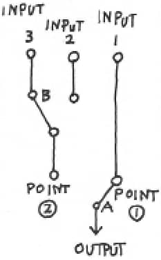
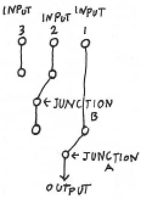

Yemek, fil fabrikası, tuzak
Halatla tırmanmak, merdivenlerden tırmanmakla karşılaştırıldığında çok daha kolay bir işti. Sağlam düğümler otuz santimlik muntazam aralıklarla devam ediyordu; halatın kendisi de elle tutmak için ideal kalınlıktaydı ve bu sayede ellerim hemen alışıverdi. İki elimle halata sarılıp, vücudumu ileri geri oynatıp esneterek adım adım yukarı tırmandım. Bu halim filmlerdeki bir halata asılı kalma sahnesini anımsatıyordu. Gerçi o halatlarda düğümler olmaz. Çünkü o sahne için düğümlü halatlar kullanılacak olursa izleyicilerin tuhafına gidebilir.
Arada sırada başımı çevirip yukarı baktığımda ışık sabit olarak yüzüme vurduğundan gözlerimin kamaşmasından mesafeyi tam olarak kestiremiyordum. Herhalde kız orada durmuş, tırmanışımı endişeyle izliyor olmalıydı. Karnımdaki yara kalp atışlarıma uygun olarak kesik kesik sancılanıyordu. Yuvarlandığımda çarptığım kafamın acısı da henüz geçmemişti. Halatta yukarıya tırmanmam için engel değildi, ama acımasına da acıyordu.
Zirveye yaklaştıkça, kızın elindeki ışık vücudumu ve etrafımı daha güçlü aydınlatmaya başladı. Bana göre bu fazlasıyla gereksiz bir nezaketti. Karanlığın içinde tırmanmaya iyice alıştığımdan, ışıkla aydınlatılınca ritim oluşturmam güçleşmiş, birkaç kez de ayağım kaymıştı. Işığın vurduğu yerle, gölgede kalan kısım arasındaki dengeyi tam olarak tutturamıyordum. Işığın aydınlattığı kısım gerçekte olduğundan daha önde görünüyor, gölgede kalan kısım ise gerçekte olduğundan daha arkadaymış gibi duruyordu. Üstelik gözlerim de çok kamaşıyordu. İnsan vücudu her türlü ortama hemencecik alışıverir. Kadim zamanlarda yeraltına inen karanlık karalarının, karanlığa uyum sağlayacak şekilde vücutlarının işlevlerini değiştirmiş olmaları hiç de tuhaf değildi.
Altmış, belki de yetmiş düğüm sonra, nihayet zirveye benzer bir yere ulaştım. Ellerimle kayanın kenarına tutunarak, yüzücülerin havuzdan kendilerini dışarıya savurmaları gibi bir hareketle kendimi yukarı çektim. Uzun halat tırmanışı sonrasında kollarım iyice yorulmuş olacak, kendimi yukarı çekmem biraz zaman aldı. Kendimi sanki bir, hatta iki kilometre kulaç atarak yüzmüş gibi hissediyordum. Kız da kemerimden yakalayarak kendimi yukarı çekmeme yardım etti.
“Az kalsın hapı yutuyorduk” dedi kız. “Dört, beş dakika geç kalsak ikimiz de ölmüş olurduk.”
“Şu hale bak” diyerek, düz kayanın üzerine kaykılıp, birkaç kez derince nefes aldım. “Su nereye kadar yükseldi acaba?”
Kız feneri yere bırakıp, halatı yavaş yavaş yukarı çekti. Otuz düğüm kadar çektikten sonra halatı bana uzattı. Halat sırılsıklam ıslanmıştı. Su bir hayli yükseğe kadar çıkmıştı. Gerçekten de kızın söylediği gibi, halata ulaşmakta dört, beş dakika geç kalsak kendimizi büyük bir tehlikenin içinde bulacaktık.
“Bu arada, dedeni buldun mu?” diye sordum.
“Evet, elbette” dedi kız. “Dip taraftaki sunağın içinde. Fakat ayağını burkmuş. Kaçarken ayağı çukurlardan birine girivermiş.”
“İyi de, ayağını burktuğu halde buraya kadar gelebilmiş mi?”
“Evet, gelebilmiş. Dedemin bünyesi sağlamdır. Bizim ailede herkes öyledir.”
“Galiba öyle” dedim. Ben de bir hayli sağlamımdır, ama onlarla boy ölçüşebileceğimi hiç sanmıyordum.
“Gidelim. Dedem içeride bekliyor. Seninle konuşmak istediği birçok şey varmış.”
“Benim de” dedim.
Çantamı bir kez daha sırtlanıp kızın ardına düşerek sunağa yöneldim. Sunak dedikleri, yalnızca düz kaya yüzeye açılmış bir kovuktan ibaretti. Kovuğun içi genişçe bir oda gibiydi, duvardaki bir oyuğa konulan tüp gazlı lambanın sarı ışığı içerisini biraz aydınlatmıştı. Girintili çıkıntılı kaya yüzeyinde tuhaf şekilli gölgeler oluşmuştu. Profesör o lambanın yanında battaniyeye sarınmış oturuyordu. Yüzünün yarısı karanlık bir gölge halindeydi. Işık yüzünden gözleri iyice çökmüş gibi görünüyordu, ama aslında sağlam sözcüğünün onun için türetilmiş olduğunu söylemek yanlış olmazdı.
“Oo, büyük badireler atlatmışsınız” dedi profesör, beni gördüğüne sevindiğini her hareketiyle belli ederek. “Su çıkacağını ben de biliyordum, ama biraz daha erken gelirsiniz diye pek kafama takmamıştım.”
“Ben şehirde yolumu kaybettim, dedeciğim” dedi tombul torun. “O yüzden bu beyle buluşmam tam bir gün gecikti.”
“Olsun, olsun. Artık bir önemi yok” dedi profesör. “Şimdi artık ne kadar zaman aldığının bir önemi yok.”
“Acaba önemsiz olan ne?” diye sordum.
“Eh, neyse. Öyle ciddileşiverme hemen. Hele bir şuraya oturuver. Önce boynuna yapışan şu sülüğü ayıralım bir. Öylece bırakırsak iz kalır.”
Profesörden biraz uzakta bir yere oturdum. Torunu da benim yanıma oturarak cebinden kibrit çıkarıp ateşleyerek, boynuma yapışan devasa sülüğü yakarak düşürdü. Kanımı iyice emen sülükler, şarap tıpası kalınlığına ulaşmışlardı. Kibritin ateşi değdiğinde ıslak bir hışırtı çıkıyordu. Yere düşen sülük, bir süre orada kıvrandıysa da, kız yürüyüş ayakkabısıyla üstüne basarak ezdi. Derimde, yanık sonrasını andıran bir acı kalmıştı. Başımı hızla sola çevirdiğimde, derimin fazla olgunlaşmış domates gibi patlayıvereceğini sandım. Böyle bir hayatı bir hafta daha sürdürecek olursam bütün vücudum çeşit çeşit yara örnekleriyle dolacaktı. Eczanelerde asılı mantar türleri fotoğrafı gibi güzelce renkli baskısı çıkarılıp dağıtılabilirdi. Karında kesik yarası, kafada şişlik, sülük yapışması sonrasında kalan leke... Sertleşme sorununu eklemek de faydalı olabilir. Öylesi daha çarpıcı olur.
Sırt çantamı açarak birkaç konserve, ekmek ve matarayı çıkarıp, konserve açacağıyla birlikte profesöre uzattım. Profesör önce mataradan kana kana su içti, sonra da yıllanmış şarap şişesi kontrol edermiş gibi, konserveleri tek tek dikkatlice inceledi. Sonra şeftali ve salamura biftek konservelerini açtı.
“Siz de ister misiniz?” diye sordu profesör. Biz de istemediğimizi söyledik. Öyle bir yerde, öyle bir anda insanın iştaha gelmesi biraz zordu.
Profesör ekmekten kopartarak üzerine salamura biftek koyup, iştahla yemeye başladı. Sonra birkaç şeftali dilimi yiyerek, kutusunu ağzına dayayıp suyunu içti. O arada ben de viski şişesini çıkarıp iki, üç yudum içtim. Viski sayesinde vücudumun farklı yerlerindeki yaraların acısına dayanma gücüm biraz artmıştı. Yaraların acısı hafiflemiş değildi, ama alkolün sinirleri uyuşturması sayesinde, o acıları benim kendimle ilgisi olmayan bir tür bağımsız yaşam formlarıymış gibi hissetmeye başlamıştım.
“Sayenizde kurtuldum” dedi profesör bana. “Her zaman burada iki, üç gün sıkıntı çekmeyecek kadar erzak bulunduruyorum, ama bu sefer tedbirsizlik edip önce kullandıklarımın yerine yenisini koymamıştım. Huzurlu günlere alışıverince, nedendir bilmem tedbir konusunda gevşeyiveriyor insan. İyi bir ders oldu. Güneşli günlerde bile şemsiye açıp yağmura karşı hazırlıklı olmak gerek. Eskiler çok iyi söylemiş.”
Profesör bir süre kendi kendine yine fuhhohhoh diye güldü.
“Böylelikle yemek faslını da geçiştirmiş olduk” dedim. “Konuya girelim isterseniz. En baştan başlayarak sırayla anlatır mısınız? Siz ne yapmak niyetindesiniz? Ne yaptınız? Sonuçları ne oldu? Benim ne yapmam gerekiyor? Her şeyi anlatın lütfen.”
“Bu bir hayli uzmanlık gerektiren bir konuşma olur sanıyorum” dedi profesör, kuşku dolu bakışlarla beni süzerek.
“Uzmanlık gerektiren kısımlarını basite indirgeyerek anlatın o zaman. Genel bir özet ve somut planın ne olduğunu anlasam yeter.”
“Her şeyi anlatacak olursam bana kızacağını sanıyorum. Onun için de...”
“Kızmam” dedim. Artık kızmamın hiçbir faydası olmazdı.
“Sanırım önce senden özür dilemem gerek” dedi profesör. “Her ne kadar araştırma için olsa bile, seni kandırarak kullanıp, üstelik bir de içinden çıkılamayacak durumlara soktum. Çok pişmanım. Lafın gelişi değil, gerçekten çok üzgünüm. Fakat yine de, benim yürüttüğüm araştırma eşi benzeri olmayan, önemli ve bir o kadar da değerli bir şey. İşin bu kısmıyla ilgili anlayış göstereceğini umut ediyorum. Bilim adamı dediğin, gözünün önüne bir bilgi damarı çıkınca, onun dışındaki hiçbir şeyi görmez hale geliverir. İşte öyle olduğu için de, bilim kesintisiz ilerlemiştir. Biraz marjinal bir ifade kullanacak olursak, bu saflığı sayesinde de ürer... Haa, hiç Platon okudunuz mu?”
“Okumadım” dedim. “Ama siz sadede gelin lütfen. Bilimsel araştırma amacınızın saflığını çok iyi anladım.”
“Kusura bakma. Ben yalnızca bilimin saflığının zamanı geldiğinde birçok insanı yaralayabileceğini söylemek istemiştim. Bu her türlü saf doğa olgusunun bazı durumlarda insanı yaralamasıyla aynıdır. Volkan patlaması şehirleri gömer, seller insanları sürükler götürür, deprem yeryüzünde taş üstünde taş bırakmaz. Ancak, bu türden doğa olgularının kötü olduğunu...”
“Dedeciğim” diye tombul torun lafa karıştı. “Biraz hızlı anlatmazsan zamanında bitiremeyebilirsin.”
“Evet, evet, haklısın” dedi profesör, bir eliyle kızın elini tutup, diğer eliyle hafifçe vurarak. “Fakat, of... Nereden başlasam konuşmaya acaba? Ben bir türlü durumu dikey olarak sıralayıp anlatmayı beceremem. Neyi, nasıl anlatsam acaba?”
“Siz bana sayıları verip karma işlemi yaptırdınız değil mi? Bunun ne gibi bir anlamı vardı?”
“Bunu açıklayabilmek için üç yıl öncesine gitmek gerek.”
“Buyurunuz, gidiniz” dedim.
“Ben o sıralarda Sistem’in araştırma enstitüsünde çalışıyordum. Resmi olarak oranın araştırmacılarından biri değildim, yani kendime ait bağımsız bir birimim vardı. Altıma dört, beş asistan, muazzam bir tesis verilmişti, bütçemi de dilediğim gibi ayarlayabiliyordum. Para umurumda olmaz, birilerinin altında çalışmayı da hiç sevmem, ama yine de, Sistem’in araştırma için sağladığı araştırma malzemesi bolluğunu başka bir yerde bulamazdım ve her şeyden öte, o araştırmanın sonuçlarını gerçek kullanıma taşıyabilmek çok cazip gelmişti.
O dönemde Sistem büyük bir tehlike yaşıyordu. Yani onların, bilgi muhafazası için geliştirdikleri farklı veri karıştırma sistemlerinin tamamı şifreciler tarafından deşifre edilmişti. Sistem yöntemlerini karmaşıklaştırdıkça, şifreciler de daha karmaşık yöntemlerle deşifre ediyor ve bu böyle sürüp gidiyordu. Bu biraz duvar örme yarışı gibi bir şeydi. Bir taraftaki ev yüksek bir duvar örünce, komşu ev ondan aşağı kalmamak için daha yükseğini örer. Zamanla duvar öylesine yükselir ki, gerçek kullanım özelliğini yitiriverir. Fakat durumun çok net farkında olsalar bile geri adım atmazlar. Geri adım yenilgi anlamına gelir. Yenilgi durumunda da, yenilen tarafın varlık değeri kayboluverir. Bunun üzerine Sistem tamamen farklı bir prensibe dayalı olarak, kolayca çözülmesi imkânsız bir veri karıştırma formülünü geliştirmek için düğmeye bastı. Ben de işte o noktada, araştırma ekibinin şefi olarak davet edildim.
Onların beni seçmiş olmaları çok yerinde bir karardı. Çünkü ben o dönemde, elbette şimdi de öyleyim, beyin fizyolojisi alanında en yetenekli, en hırslı bilim adamıydım. Araştırma makaleleri yayınlamak, kongrelerde konferanslar vermek gibi saçma sapan işlerle uğraşmadığım için bilim dünyasında görmezden geliniyordum, ama beyin bilimleri konusunda benimle boy ölçüşebilecek bir kişi bile yoktu. Sistem de bunu çok iyi biliyordu. İşte o yüzden de beni o iş için en uygun kişi olarak seçtiler. Onlar, fikir geliştirme hususunda tam bir dönüşüm arzuluyorlardı. Halihazırda var olan formüllerin karmaşıklaştırılması ve rafine edilmesi değil, kökten ve kesin bir dönüşümdü istedikleri. Böyle bir işi de, üniversite laboratuarlarında sabahtan akşama kadar çalışıp ipe sapa gelmez makaleler yazmaktan, maaş hesapları yapmaktan başka bir şey bilmeyen bilim adamları asla beceremezdi. Gerçek anlamda yaratıcı bilim adamı dediğinin, özgür olması gerekir.
“Fakat Sistem’e girmekle, o özgür konumunuzdan da vazgeçmiş oldunuz değil mi?” diye sordum.
“Aynen öyle. Haklısın” dedi profesör. “Söylediğin doğru. O konuyla ilgili olarak ben de kendimce özeleştiri yapıyorum. Pişman değilim, ama ben kendi teorimi pratiğe dökebileceğim bir yer bulmaya can atıyordum. O sırada kafamın içerisinde sağlam bir teori geliştirmiş durumdaydım. Ancak bunu pratikte sınama olanağım yoktu. İşin burası beyin fizyolojisi alanının sıkıntılı noktasıdır. Diğer fizyoloji alanlarında olduğu gibi hayvanları kullanarak deneyleri ilerletmek mümkün değildir. Çünkü maymun beyninin, insanın bilinçaltı ve belleğine uyumlu olacak karmaşık işlevleri yoktur.”
“Onun için sen de” dedim. “Bizi insan üzerinde deneyler için kullandın.”
“Dur, dur. Sonuca varmak için acele etme. Önce teorimi basitçe anlatayım. Şifre konusunda genel bir kanı vardır. ‘Çözülemeyecek şifre yoktur’ dediğimiz şey. Bu gerçekten doğrudur. Neden dersen, şifre dediğimiz şey belirli bir kurala göre ortaya çıkar da ondan. Kuralsa, ne kadar karmaşık ve hassas olursa olsun, nihayetinde birçok insanın anlayabileceği psikolojik ortaklıklar gibidir. O yüzden, eğer o kural anlaşılabiliyorsa, şifre de çözülür. Şifreler arasında en güvenilir olanı, kitaptan kitaba sistemidir. Yani aynı kitabın aynı baskısını ellerinde bulunduran insanların, sayfa numarası ve satır sırasındaki sözcükleri belirledikleri sistem. Ancak, bunda bile o kitap ortaya çıktığı anda her şey bitmiş demektir. Her şeyden öte, o kitabı sürekli elinin altında bulundurman gerekir. Tehlikesi çok fazladır.
Ben o noktada düşündüm. Mükemmel bir şifre, ancak tek bir yolla mümkün olabilir. O da, kimsenin anlayamayacağı bir sisteme bağlı olarak karıştırma yapmak. Yani kusursuz bir karakutu aracılığıyla bilgi karıştırılacak, karıştırılan bilgiler de yine aynı karakutu yoluyla çözülecek. Dahası bu karakutunun içeriğini ve çalışma prensibini işi yapan kişi bile bilmeyecek. Kullanabilecek, ama nasıl bir şey olduğunu bilmeyecek. Aşağı yukarı böyleydi işte. Kişinin kendisi bile bilmediğine göre, başkalarının öğrenmesine de imkân olmaz. Ne dersin, kusursuz değil mi?”
“O karakutunun insanın bilinçaltı olduğunu mu söylemeye çalışıyorsunuz?”
“Evet, aynen öyle. Biraz daha açıklamama izin ver. Şöyle bir şey. İnsanların her biri kendi kurallarına göre hareket ederler. Birbirinin tamamen aynısı olan iki insan asla olmaz. Nasıl desem, kısacası kimlikle ilgili bir sorun. Kimlik nedir? Her bir insanın geçmiş deneyimleri ve belleğinin birikimi ile ortaya çıkan fikir üretme sisteminin özgünlüğü demektir. Çok daha basite indirgersek yürek de diyebiliriz. İnsanlar arasında tamamen aynı iki yürek olamaz. Fakat insanlar kendi düşünce sistemlerinin büyük bir bölümünü kavrayamaz. Ben de öyleyim, sen de öylesin. Kavrayabildiğimizi sandığımız alan, bütünün on beşte, hatta yirmide birini geçmez. Bunu buzdağının görünen ucu olarak bile nitelendiremeyiz. Örneğin, basit bir soru sorayım. Sen atılgan mısındır, korkak mı?”
“Bilemiyorum” dedim, dürüstçe. “Bazı durumlarda atılganımdır, bazı durumlarda ise korkak. Tek bir cümleyle ifade edemeyeceğim.”
“Fikir üretme sistemi de, tam olarak böyle bir şeydir. Tek bir cümleyle ifade edilemez. Çevredeki koşullar ve hedef nesneye bağlı olarak cesaret ve korkaklık gibi iki uç arasında kalan bir noktayı tamamen doğal ve anlık olarak seçersin. İşte öyle dallı budaklı bir program senin içinde gelişmiş durumdadır. Fakat o programın ayrıntıları ya da içeriği hakkında hiçbir bilgin olmaz. Çünkü bilmen de gerekmez. Bunu bilmesen de sen kendin olarak işlevini sürdürürsün. İşte bu da tam olarak benim sözünü ettiğim karakutudur. Yani bizim kafamızın içinde insan ayağı değmemiş devasa bir fil mezarlığı vardır. Uzayı bir yana bırakırsak, bu insanoğlu için kalan son terra incognita, yani meçhul topraklardır.
Hayır, hayır. Fil mezarlığı yerinde bir tanımlama olmadı. Neden dersen, bu alan ölü belleklerin toplandığı bir alan değildir de ondan. Fil fabrikası demek daha doğru olur belki de. Orada sayısız bellek ve algılama parçası elekten geçirilir, seçilen parçalar ise kurgulanarak dizi haline gelir, o diziler yine kendi aralarında kurgulanarak öbekleri, o öbekler de sistemi oluşturur. Bu tam anlamıyla bir fabrika gibi işler. Üretmektedir çünkü. Fabrika müdürü elbette sensin, ama fabrikanın içine giremezsin. Alice’in Harikalar Diyarı ile aynı şekilde, oraya girebilmen için özel bir ilaç gerekir. Eh, Lewis Carrol’ın o öyküsü gerçekten mükemmeldir.”
“Sonra o fil fabrikasından gelen emre göre hareket kalıpları belirlenmiş oluyor. Öyle mi?”
“Haklısın” dedi ihtiyar. “Yani...”
“Biraz durun” dedim, ihtiyarın sözünü keserek. “Bir soru sormama izin verin lütfen.”
“Elbette, buyur bakalım.”
“Söylediklerinizin mantığını anlayabiliyorum. Ancak, hareket kalıplarını gerçekte yapılan ve yüzeysel olan hareketlerde belirleyici unsur olacak şekilde esnetmek mümkün olmasa gerek. Örneğin sabah kalkıp ekmekle birlikte süt mü, kahve mi, yoksa çay mı içeceğimiz o anki ruh halimize bağlı değil midir?”
“Çok haklısın” dedi profesör, başını yukarıdan aşağı sallayarak. “Bir diğer sorun, insanoğlunun bilinçaltının sürekli değişmekte oluşudur. Örneklemek gerekirse, her gün yeniden gözden geçirilmiş baskısı çıkan bir ansiklopedi gibidir. İnsanoğlunun düşünce üretme sistemini dengeye oturtmak için bu iki sorunu çözmek gerekir.”
“Sorun mu?” dedim. “Sorun bunun neresinde? İnsanoğlunun son derece doğal davranışları değil mi bunlar?”
“Biraz sabırlı ol” dedi profesör, sanki bir kavgayı yatıştırmak istermiş gibi. “Bunun peşine düşülünce, sorun teolojik bir sorun haline geliverir. Determinizm mi desem, işte onun gibi bir şey. İnsanoğlunun hareketleri Tanrı tarafından önceden mi belirlenir, yoksa baştan sona kendisinden mi kaynaklanır? Sorun bu işte. Modern çağla birlikte bilim elbette ağırlık noktasını insan psikolojisinin kendiliğinden olma özelliğine yerleştirerek ilerlemiştir. Ancak, kendiliğinden olma özelliğinin ne anlama geldiği sorulduğunda, hiç kimse tam olarak yanıtlayamaz. Bizim içimizdeki fil fabrikasının gizemini de hiç kimse kavrayamamıştır. Freud ve Junge farklı savlar öne sürmüşlerdir, ama bunlar nihayetinde o konu hakkında konuşabilmeyi sağlayacak tekniklerden öteye geçmez. İş kolaylaşmıştır, ama insanın kendiliğinden olma özelliği kesinleşmiş midir dersen, pek de öyle değildir. Benim gözümle bakarsan, psikolojiye skolastik felsefe renkleri katmaktan başka bir şey değil.”
Profesör burada kısa bir süre burnundan seslice nefes verirmiş gibi güldü. Kız ve ben de, onun gülmesinin geçmesini sabırla bekledik.
“Benim nasıl bir insan olduğumu sorarsan, gerçekçi düşünenlerden olduğumu söyleyebilirim” diye devam etti, profesör. “Eski bir lafı ödünç alacak olursam, ‘Tanrı’nın hakkı Tanrı’ya, Sezar’ın hakkı Sezar’a’ gibi. Metafizik dediğimiz, nihayetinde göstergelere dayalı günlük konuşmalardan başka bir şey değildir. Oralara gelmeden önce, sınırlı bir yerde gerçekleştirilmesi gereken dağ kadar iş vardır. Örneğin bu karakutu sorunu öyledir. Karakutunun, karakutu olarak el değmeden bırakılmasında bir sorun yok. O karakutu özelliği olduğu gibi kullanılabilir. Ancak...” diyen profesör, işaret parmağını kaldırdı. “Ancak, az önce sözünü ettiğim iki sorunun çözümlenmesi gerekir. Birincisi yüzeysel hareketler düzeyindeki rastlantısallık, diğeri ise yeni deneyimlerin eklenmesiyle karakutuda meydana gelen değişimdir. Bu öyle kolayca çözülebilecek bir sorun değildir. Az önce de söylediğim gibi, bunlar insan açısından son derece doğal hareketlerdir çünkü. İnsan yaşadığı müddetçe deneyimleri sürer, o deneyimler de her dakika, her saniye bünye içerisinde biriktirilir. Bunun kesilmesi demek, insanın ölmesi anlamına gelir.
Bunun üzerine ben bir hipotez geliştirdim. Tek bir anla ilgili olarak, insanın karakutusunun o andaki halinin sabitlenmesi mümkün olabilir mi, sorusundan yola çıkarak. Daha sonrasında değişim gösteriyorsa bile, istediği gibi o değişimi gösterebilir. Fakat bu değişimin dışında kalacak şekilde, karakutunun o belirli andaki hali sabit olarak kalacak, istendiğinde de geri çağırılabilecek. Şok dondurma işlemine yakın bir durum.”
“Bir saniye lütfen” dedim. “Bu durumda bir insanın içine iki farklı tür düşünce sistemi yerleştirilmiş olur.”
“Aynen öyle” dedi yaşlı adam. “Aynen söylediğin gibi. Çok hızlı kavrıyorsun. Sana güvenmekle haklıymışım. Söylediğin gibi. Düşünce sistemi A sabit olarak korunur. Diğer bir fazda ise A1, A2, A3.... şeklinde aralıksız dönüşümüne devam eder. Bu bir pantolonun sağ cebine durmuş bir saat koyup, sol cebine çalışmakta olan bir saat koymakla aynıdır. İhtiyaca göre, istediğini çıkarabilirsin. Böylece bir taraftaki sorun çözülmüş olur.
Aynı prensip üzerinden diğer taraftaki sorunu halletmek mümkün olur. Orijinal düşünce sistemi A’nın yüzey düzeyindeki seçicilik özelliğini kesip çıkarırsın. Anlayabiliyor musun?”
Anlamadığımı söyledim.
“Kısacası diş hekiminin mine tabakasını kazımasıyla aynı şekilde yüzey tabakası kazınır. Sonra gerekli olan ağırlıklı faktör, yani bilincin yalnızca çekirdeği bırakılır. Böylelikle sapma denilecek ölçüde sapmalar ortaya çıkmaz. Sonra yüzeyi kazınmış düşünce sistemini dondurup kuyuya atıverirsin. Hoop diye. Bu karma işleminin prototipidir. Benim Sistem’e girmeden önce kurguladığım teori aşağı yukarı böyleydi.”
“Ameliyat etmekten mi bahsediyorsunuz?”
“Ameliyat gerekli” dedi profesör. “Araştırmalar daha da ilerlerse, bir olasılık ameliyata gerek kalmayacaktır. Bir tür hipnotizma yoluyla, dışarıdan manevralarla benzeri koşulları ortaya çıkarmak mümkün olacaktır. Fakat şu anki aşamada bu mümkün değil. Beyne elektrik tipi bir şok vermekten başka çaresi yok. Yani, beyin devrelerinin akışı suni olarak değiştirilmiş oluyor. Bu pek o kadar da bilinmeyen bir şey değil. Ruhsal dengesizlikleri olan hastalara yönelik olarak günümüzde de uygulanan beyin sınırlama ameliyatlarının bir parça uyarlanmış şeklinden başka bir şey değil. Beynin kıvrımlarından çıkan elektrik akımı bu yolla bastırılmış oluyor, ama... İşin uzmanlık gerektiren kısmını atlasam olur mu?”
“Atlayınız” dedim. “Ana noktaları yeterli.”
“Kısacası beyin dalgalarının akıntısı üzerinde eklemler oluşturmuş oluyoruz. Kavşak gibi. Onun yanına kutup ve pil yerleştiriliyor. Sonra özel bir sinyalle o eklem tıkır tıkır işlev değiştiriyor.”
“Öyleyse benim beynimde de o pil ve kutuptan var. Öyle mi?”
“Elbette.”
“Off, yahu!” dedim.
“Hayır, bu senin düşündüğün kadar korkacak bir şey de, özel bir şey de değil. Büyüklüğü bile fasulye tanesi kadar ve o kadar bir şeyi vücudunda taşıyan sürüyle insan var bu âlemde. Söylemem gereken bir diğer şey de özgün düşünce sistemi, yani durmuş saat tarafındaki devrelerin kör devreler olduğu. O devreye girdiğin andan itibaren, sen kendi düşüncelerinin akışını asla algılayamazsın. Yani o süre boyunca, sen kendinin ne düşündüğünü, ne yaptığını hiç anlayamazsın. Bu şekilde olmazsa, senin kendi başına o düşünce sistemini değiştirme ihtimalin var çünkü.”
“Bir de, yüzeyi kazınan saf bilinç çekirdeğinin radyasyon sorunu da var değil mi? Ameliyattan sonra senin ekipten biri öyle demişti. Bu radyasyon insanın beynini müthiş etkileyebilirmiş.”
“Evet, öyle. O da var elbette. Fakat bununla ilgili kesinleşmiş bir görüş yoktu. O aşamada bir savdan öteye geçmiyordu. Denemiş değiliz elbette, ama bu olasılık söz konusuydu tabii.
Az önce sen insanlar üzerinde deney dedin de, dürüst olmak gerekirse biz bazı insanlar üzerinde deneyler yaptık. En başta değerli insanlar olan siz hesapçıları tehlikeye atamazdık çünkü. Sistem on uygun insan buldu, biz de ameliyat edip sonuçlarına baktık.”
“Nasıl insanlardı?”
“Bunu bize söylemediler. Önemli olan, on sağlıklı erkek olmalarıydı. Akıl hastalığı geçmişi olmaması gerekiyordu ve IQ’sunun 120’nin üzerinde olması şartı vardı. Ne gibi insanları, ne şekilde getirdiklerini biz bilmiyorduk. Sonuçlar beklentilerimizin üzerindeydi. On kişiden yedisinde eklem düzgün çalıştı. Üçünde ise eklemin işlevi olmadı. Düşünce sistemi ya bir tarafa kayıyor ya da birbirine karışıyordu. Fakat yedisinde sorun yoktu.”
“Karışan insanlara ne oldu?”
“Elbette eski hallerine getirdik. Bir zarar görmediler. Geri kalan yedisinin eğitimlerini sürdürürken bazı sorunlu noktalar açığa çıktı. Birisi teknik sorundu, diğeri ise denekten kaynaklanıyordu. Öncelikle eklemin makas atma yapılan çağrı sinyalinin karmaşık olmasıydı. Başlangıçta biz belirlediğimiz beş haneli bir sayıyı çağrı sinyali olarak belirledik, ama nedense aralarından bazılarında doğal üzüm suyunun kokusuyla bile eklemin makas atması durumu ortaya çıktı. Öğlen yemeğinde üzüm suyu verdiğimizde bu durum anlaşılmıştı.”
Tombul kız yanımda kıs kıs gülüyordu, ama bu benim için hiç de gülünecek bir durum değildi. Şahsen benim açımdan, karma işlemi düzeneğini kazandıktan sonra, birçok şeyin kokusu kafama takılır hale gelmişti. Sözgelişi, kızın kavun kokulu parfümünü koklayınca, kafamın içinde bir ses duyarmış gibi olmam da bu sıkıntılardan biriydi. Bir şeylerin kokusunu her alışımda düşünce sistemi makas atacak olursa, iş içinden çıkılmaz bir hal alırdı.
“Bunu rakamların arasına özel bir ses dalgası yerleştirerek hallettik. Bir tür koku duyusu tepkisinin çağrı sinyali ile ortaya çıkma tepkisine çok benziyordu. Bir diğeri ise kişisine göre eklem makas değiştirdiği halde, orijinal düşünce sisteminin çalışmama durumunun ortaya çıktığı gerçeğiydi. Bu konuda yaptığımız bir dizi araştırma sonucunda deneklerin kendisinin düşünce sistemlerinde sorun olduğu anlaşıldı. Deneklerin bilincinin çekirdeği nitelik olarak dengesiz ve silikti. Sağlıklı ve yeterli zihin güçleri vardı, ama ruhsal kimlikleri oluşmamıştı. Aksine oto-kontrolü yetersiz olanı da vardı. Kimlik yeterli şekilde oluşmuştu, ama bu kimlik düzen altına alınmadığı için işe yaramaz durumdaydılar. Kısacası, ameliyat olduktan sonra herkesin karma işlemini yapabilir hale gelebilmesi söz konusu değildi. Evet, belirli bir düzeyde uygun olmak gerekiyordu.
O öyle, bu böyle derken geriye üç kişi kaldı. O üçünde eklem belirli çağrı sinyaline göre makas değiştiriyor, dondurulan orijinal düşünce sistemini kullanarak etkin ve dengeli işlev görüyordu. Onları bir ay boyunca kullanarak deneyleri sürdürdükten sonra hiçbir sorunumuz kalmamıştı.”
“Sonra bize karma işlem düzeneğini yerleştirdiniz.”
“Evet, doğru. Biz testler ve yüz yüze görüşmeler neticesinde, beş yüze yakın hesapçı arasından ruhsal bağımsızlıkları oturmuş, üstelik kendi hareketlerini ve duygularını kontrol edebilen tipte ve akıl hastalığı geçmişi olmayan 26 erkeği seçtik. Bu müthiş zahmetli bir işti. Testler ya da yüz yüze görüşmelerde anlaşılmayan noktalar da olur çünkü. Sonra Sistem o 26 kişinin her biri için ayrıntılı dosyalar hazırladı. Çocukluğu, okuldaki başarı durumu, ailesi, cinsel yaşamı, alkol alma miktarı... Nihayetinde dosyalarda her şey vardı. Sizi yeni doğmuş bebek gibi güzelce yıkamıştık. O yüzden seninle ilgili şeyleri kendi çocuğummuşsun gibi biliyorum.”
“Anlayamadığım bir nokta var” dedim. “Benim duyduğum kadarıyla, bizim bilinçlerimizin çekirdeği, yani karakutu Sistem’in veri bankasında saklanıyormuş. Bu nasıl mümkün oluyor?”
“Biz sizin düşünce sistemlerinizi en ince ayrıntısına kadar klonladık. Sonra simülasyonunu kurgulayarak ana banka olarak koruma altına aldık. Eğer öyle yapmasaydık, size bir şey olduğunda elimiz kolumuz bağlanmış olacaktı. Sigorta amaçlıydı yani.”
“O simülasyonlar kusursuz muydu?”
“Hayır, kusursuz olduğunu söyleyemem, ama yüzey tabakası etkin bir şekilde kazındığı için, klonlama da o ölçüde kolay oldu. İşlevsel açıdan kusursuza yakın olduğunu söyleyebilirim. Biraz ayrıntısına girecek olursak, bu simülasyon üç tür yüzey koordinatı ve holograftan oluşuyor. Bildiğimiz bilgisayarlarda böyle bir şey elbette imkânsız, ama yeni geliştirilen bilgisayarların kendisi de fil fabrikası işlevini bir hayli yerine getirebildiğinden, bilincin karmaşık yapısına uyum gösterebiliyor. Kısacası haritalamadaki sabitleştirme sorunu, ama işin o kısmına girersek laf uzar. Çok basite indirgeyecek olursak klonlama yöntemi şu şekilde: Önce senin bilincinin elektrik yayma kalıplarından birkaçını bilgisayara girdik. Bu kalıplar her bir duruma göre ufak sapmalar gösterir. Hatlar üzerindeki çipler, öbek içerisinde de hatlar modifiye edilir. Bu modifiye edilmiş kısımlarda ölçümsel olarak anlam ifade etmeyen şeyler olabileceği gibi, anlamlı olanları da vardır. Bu ayrıştırmayı bilgisayar yapar. Anlam taşımayanlar temizlenir, anlamlı olanlar temel kalıplar olarak işlenir. Bu yüzler, binler, on binler birimiyle tekrarlanır. Plastik kâğıtları üst üste yığmak gibi düşün. Sonra daha fazla sapma görülmediğinden emin olduktan sonra o kalıp karakutu olarak ayrılır.”
“Beyni yeniden mi yarattınız siz?”
“Hayır, öyle değil. Beyin yeniden yaratılamaz. Bizim yaptığımız senin bilincinin sistemini olgusal düzeyde sabitlemekten öteye geçmiyor. Bu da belirli bir zamansallık içerisinde kaldı. Zamansallık dediğimiz şeye yönelik olarak beynin esnekliği karşısında elimizden hiçbir şey gelmez. Fakat benim yaptığım yalnızca bu değil. Ben o karakutunun görüntülenmesini başardım.”
Profesör bu sözlerinden sonra, bir bana bir de tombul torununa baktı.
“Bilinç çekirdeğinin görüntü haline getirilmesi. Bunu şimdiye kadar kimse başaramadı. İmkânsızdı çünkü. Ben nasıl başardım sence?”
“Bilmiyorum.”
“Deneklere bir cisim gösterip, görme duyularına bağlı olarak beyinde ortaya çıkan elektriksel tepkimeyi analiz ederek, bunu da rakamlara dönüştürüp, sonra da noktalara çevirdik. Başlangıçta çok basit şekillerden başka bir şey çıkmadı, ama defalarca eklemeler yaparak ayrıntı kısımları tamamlayınca, deneklerin gördüğü görüntüyü bilgisayar ekranında grafik haline getirdik. Lafla söylendiği kadar kolay olmadığı gibi, hem emek hem de zaman aldı, ama basite indirgersek ana hatlarıyla yaptığımız iş buydu. Bunu birçok kez tekrarlayınca, bilgisayar kalıpları ezberleyerek beynin elektriksel tepkilerinden otomatik olarak görüntüleri yansıtmaya başladı. Bilgisayar gerçekten çok hoş bir şey. Sen belirli bir mantıkta komutları girdiğin sürece, o mantık doğrultusunda iş görür.
Ardından nihayet kalıpları ezberleyen bilgisayarın içine, bu kez karakutuyu yerleştirdik. Bunun üzerine gerçekten mükemmel bir şekilde bilinç çekirdeğinin ne halde olduğu görüntüye dönüşüverdi. Fakat elbette bu görüntü bir parçadan ibaretti ve karmaşıktı, o haliyle de hiçbir anlamı yoktu. Burada bir düzenleme işlemi gerekti. Evet, tam olarak film montaj çalışması gibi. Görüntü öbeklerini kesip yapıştırma, bazılarını çıkarma, farklı şekillerde bir araya getirmek şeklinde bir işlem. Böylelikle mantıklı bir öykü haline geliverdi.”
“Öykü?”
“O kadar da garip bir şey değil” dedi profesör. “Usta müzisyenler bilinçlerini sese çevirir, ressamlar ise renklere ve şekillere. Yazarlar ise öyküye çevirir. Aynı mantık. Elbette dönüştürüldüğü için, tam olarak doğru bir klonlama değil, ama bilinci aşağı yukarı anlayabilmek için gerçekten kullanışlı bir yol. Ne kadar doğru bile olsa birbirine karışmış görüntüler karmaşasına bakacak olursan bütünü yakalaman güçleşir. Bir de görsel versiyonu kullanarak herhangi bir şey yapacak olmadığımız için, birebir aynı olması gerekliliği de yok. Bu görselleştirme işlemini tamamen kendi hobim olarak yaptım.”
“Hobi?”
“Ben eskiden, savaştan da önce, film yönetmeni asistanlığı benzeri bir iş yapmıştım. Bu yüzden o işlerden anlarım. Kısacası karmaşaya bir düzen kazandırma işlemi işte. O yüzden, diğer elemanları kullanmaksızın, kendi laboratuarıma kapanarak o işi tek başıma yaptım. Orada ne yaptığımı diğerleri bilmezler. Sonra o görselleştirilmiş verileri gizlice evime getirdim.”
“26 kişinin tamamının bilinçlerini görselleştirdiniz mi?”
“Evet, öyle. Tamamını yaptım. Sonra her birine isim koydum, o isimler her birinizin karakutusunun ismi de oldu. Seninki ‘Dünyanın Sonu’ idi.”
“Haklısınız. ‘Dünyanın Sonu’. Neden öyle bir isim konulduğunu hep merak etmişimdir.”
“Bunu daha sonra konuşalım” dedi profesör. “Neticede, benim o 26 kişinin bilinçlerini görselleştirmeyi başardığımı hiç kimse bilmedi. Ben de hiç kimseye söylemedim. Ben o araştırmayı Sistem’le alakası olmayan bir yerde ilerletmek istedim. Ben Sistem’in istediği projeyi başarıya ulaştırmıştım ve ihtiyacım olan, insan üzerindeki deneylerimi de tamamlamıştım. Üstelik başkalarının çıkarı için araştırma yapmaktan da gına gelmişti. Kendi keyfime göre, istediğim alana el atabileceğim araştırma yaşantıma dönmek istiyordum. Ben öyle tek bir araştırmaya saplanıp kalan tiplerden değilimdir. Birçok araştırmayı paralel olarak ilerletmek karakterime daha uygun. Bir tarafta kemik araştırması, öbür tarafta sesbilim, onlarla aynı zamanda nöroloji şeklinde. Fakat başkaları tarafından kullanılma durumunda bunu yapmak mümkün değil. Bunun üzerine araştırma belirli bir aşamaya gelince bana düşen görevi tamamladığımı, geri kalan işin teknik çalışmalar olduğunu ve artık bırakmak istediğimi Sistem’e bildirdim. Fakat onlar bir türlü izin vermek istemediler. Çünkü ben o proje hakkında fazla şey biliyordum. O aşamada ben şifrecilerin tarafına geçecek olursam, karma işlemi projesinin suya düşeceğini düşünmüş olmalılar. Onlar açısından dost olmayan, düşman demektir. Benden üç ay daha beklememi rica ettiler. Enstitü içerisinde dilediğim gibi araştırma yapabileceğimi söylediler. Hiçbir iş yapmam gerekmeyecekti, özel bir ikramiye de alacaktım. Üç ay içerisinde sağlam bir gizli bilgi koruma sistemi geliştireceklerini, ayrılma işini ondan sonraya bırakmamı istediler. Ben doğuştan özgürlüğüne düşkün bir adamımdır, o şekilde bağlı kalmak rahatsız edici bir durumdu, ama fena bir teklif de değildi. Bunun üzerine üç ay boyunca keyfime estiği şekilde çalışmayı kabul ettim.
Fakat insan gevşeyince rahat durmayabiliyor. Ben de o boşluktan istifade deneklerin, yani sizin, beyin eklemlerine başka bir devre daha eklemeyi akıl ettim. Üçüncü düşünce devresi. Sonra o devreyi montajını benim yaptığım bilinç çekirdeklerine ekleyiverdim.”
“Durup dururken neden öyle bir şey yaptınız?”
“Bir nedeni deneklerde ne gibi bir etkisi olacağını görmek istememdi. Bir başkası tarafından düzenlenerek toparlanan bilincin deneklerin içinde ne şekilde işlev göreceğin öğrenmek istedim. İnsanoğlunun tarihinde buna benzer bir örnek asla olmadı çünkü. Bir diğer neden ise, bu elbette ikincil bir dürtü, ama Sistem beni kendi istediği gibi kullanmak istiyorsa, ben de kendi istediğim gibi hareket etmek istedim. Onların bilmediği bir işlev ortaya çıkarmak istemiştim.”
“Yalnızca bu kadar basit bir nedenle” dedim. “Sen bizim kafamızın içine lokomotif hattı gibi belalı bir devre mi yerleştirdin?”
“Yani, bu söze karşı yapabileceğim bir açıklama yok. Gerçekten yüzüm tutmaz. Fakat sen anlamayabilirsin belki, ama bilim adamlarının içindeki merak bir türlü bastırılamaz. Nazilerle işbirliği yapan vücut bilimcilerin toplama kamplarında canlı insanlar üzerinde yaptıkları deneyleri ben de lanetliyorum, ama yüreğimin derinliklerinde de nasıl olsa yapılacaksa eğer, daha düzenli ve etkin bir şekilde yapılması gerektiğine inanıyorum. Canlı vücutlar üzerinde çalışan bilim adamlarının düşündükleri şeyler temelde birbirinden farksızdır. Üstelik benim yaptığım şey kesinlikle insan hayatını tehlikeye atan bir şey değildi. Devrenin akımını biraz değiştirmekle, beynin yükü artmış olmaz. Aynı alfabe harflerini kullanarak, başka bir sözcük türetmek gibi bir şey yalnızca.”
“Fakat aslında benim dışımdaki karma işlemi düzeneği yerleştirilen tüm insanlar öldü. Bunun nedeni ne peki?”
“Bunu ben de bilemiyorum” dedi profesör. “Gerçekten de, söylediğin gibi karma işlemi düzeneği yerleştirilen 26 kişinin 25’i öldü. Hepsi de aynı ölüm şekilleriyle. Yataklarına uyumak için giriyorlar, sabah olduğunda ölü bulunuyorlar.”
“Öyleyse ben de” dedim. “Yarın sabah aynı şekilde ölmüş olabilirim.”
“Durum o kadar basit değil” dedi profesör, battaniyenin altında oturuş şeklini değiştirerek. “Şöyle ki, o 25 kişinin öldükleri dönem yaklaşık olarak altı aylık dilim içerisinde yoğunlaşıyor. Yani düzenek yerleştirildikten sonra 14 ila 20 ay arasında. O 25 kişinin tamamı o zaman dilimi içerisinde öldüler. Fakat sen, aradan üç yıl üç ay geçtikten sonra bugün bile hiçbir engelle karşılaşmadan karma işlemi yapmaya devam ediyorsun. Öyleyse, sende başkalarında olmayan özel bir niteliğin olduğunu düşünmek zorundayız.”
“Özel derken, hangi anlamda özel?”
“Biraz dur. Hemen heyecanlanma. Peki sen karma işlemi düzeneği sonrasında herhangi garip bir rahatsızlıkla karşılaştın mı? Halüsinasyon görme, gaipten sesler işitme, bayılma gibi.”
“Karşılaşmadım” dedim. “Halüsinasyon görmüyorum, gaipten sesler de duymuyorum. Yalnız belirli bir tür kokuya karşı hassaslaşıyorum sanırım. Çoğunlukla da meyve kökenli kokular oluyor.”
“Bu hepinizde ortak noktaydı. Belirli bir meyve eklemi etkiliyor. Neden bilmiyorum, ama öyle oluyor. Fakat bunun sonucu olarak halüsinasyon, gaipten sesler duyma, bayılma durumu olmuyor. Öyle mi?”
“Olmuyor” diye yanıtladım.
“Hmm.” Profesör bir an düşündü. “Başka bir şey?”
“Bu az önce başladı sanırım, ama gizli kalan belleğimin yerine döndüğünü hissettiğim oluyor. Şimdiye kadar parçacıklar halinde olduğu için pek önemsememiştim, ama az önceki çok net olarak uzunca bir süre devam etti. Nedenini biliyorum. Suyun sesi tetikledi. Fakat halüsinasyon değildi. Net bir şekilde belleğimde olan bir şeydi. Burası çok açık.”
“Hayır, değil” dedi profesör, kararlı bir ses tonuyla. “Sen bellek olduğunu zannedebilirsin, ama bu senin kendinin yaptığın suni bir köprü. Kısacası senin kimliğinle benim düzenleyerek yerleştirdiğim bilinç arasında kaymalar oluyor. Sen de kendi varlığını haklı hale getirmek için o kaymalar arasına köprü kuruyorsun.”
“Tam olarak anlayamıyorum. Şimdiye kadar hiç öyle bir şey olmamıştı. Neden şimdi bir anda ortaya çıkıverdi?”
“Ben eklem makasını değiştirip, üçüncü devreyi serbest bıraktığım için” dedi profesör. “Fakat, neyse. Konumuza sırasına göre devam edelim. Öyle yapmazsak konuşması zor olur, senin anlaman da güçleşir.”
Viski şişesini çıkararak bir yudum daha içtim. Nedense, bu tahmin ettiğimden daha berbat bir konuşmaya dönüşecek gibiydi.
“İlk sekiz kişi ardı ardına öldüğünde Sistem beni çağırdı. Ölüm nedenini bulmamı istiyorlardı. Ben aslında artık oraya bulaşmak istemiyordum, ama benim geliştirdiğim bir teknikti ve insanların hayat meyat meselesi olunca yüzüstü bırakamadım. Şöyle bir durumu görmek için gittim. Onlar bana sekiz kişinin ölümüyle ilgili süreci, beyin otopsilerinin sonuçlarını anlattılar. Az önce de söylediğim gibi sekizi de aynı şekilde ölmüştü, tümünün ölüm nedeni de belirsizdi. Vücutlarında ya da beyinlerinde herhangi bir hasar yoktu, hepsi sessizce uyurmuş gibi son nefeslerini vermişlerdi. Sanki ötenazi gibiydi. Yüzlerinde de sıkıntı çektiklerine dair hiçbir iz yoktu.”
“Ölüm nedenini anlayamadınız mı?”
“Anlayamadım. Fakat elbette tahmin ya da hipotez ileri sürebilirdim. Ne de olsa sırayla sekiz karma işlemi düzeneği yerleştirilmiş hesapçı birbiri ardına ölmüştü ve bu tesadüf diyerek geçiştirilemezdi. Bir açıklama getirmem gerekiyordu. Ne olursa olsun, bu da bilim adamının görevidir. Benim tahminim şöyleydi: Beyne yerleştirilen eklemin ya işlevi gevşemiş, ya yanmış ya da işlerliğini yitirmişti, bu yüzden de düşünce sistemi bulanıklaşmış, orada ortaya çıkan enerjiye beynin işlevleri direnç gösterememişti belki. Bir diğer ihtimal olarak, eğer eklemde sorun yoksa, bilinç çekirdeğinin kısa bir süreliğine de olsa serbest bırakılması eyleminin kendisinde bir sorun olabilir miydi? Acaba bu insan beyninin dayanma sınırlarını aşıyor muydu?” Profesör bu sözlerinden sonra battaniyeyi çenesine kadar çekerek, kısa bir ara sustu. “Benim tahminim buydu işte. Kesin bir kanıtım yok, ama olay öncesi ve sonrası koşullara bakarak düşünecek olursak, bu iki olasılıktan biri ya da ikisinin birden etken olduğunu düşünmek en doğrusu olacaktı.”
“Beyin otopsisinde bile anlaşılamadı mı?”
“Beyin dediğin tost makinesinden de, çamaşır makinesinden de farklıdır. Gözle görülebilen kablolar ya da tuşlar yoktur. Gözle görülemeyen elektrik salınımını değiştirmekten ibaret olan bir iş olduğu için, ölüm sonrasında o eklemi çıkarıp incelemek bir işe yaramaz. Yaşayan bir beyin olsa bir şeyler anlaşılabilir, ama beyin öldükten sonra hiçbir şey anlaşılmaz. Elbette yara ya da tümör olsa anlaşılır, ama bunlar da yoktu. Tamamen tertemizdi.
Bunun üzerine biz, yaşamakta olan 18 deneği laboratuara geri çağırıp, yeniden kontrol ettik. Beyin dalgalarını yakalayıp, düşünce sistemi değişikliğini yaparak eklemin düzgün çalışıp çalışmadığını kontrol ettik. Ayrıntılı görüşmeler de yaparak vücutlarında bir anormallik olup olmadığını, halüsinasyon, gaipten ses duyma gibi durumlar olup olmadığını sorduk. Fakat sorun edilebilecek hiçbir şey yoktu. Tümü sağlıklıydı, karma işlemini de gayet sorunsuzca yapabiliyorlardı. Bunun üzerine biz ölenlerin beyinlerinde doğuştan gelen bir eksiklik olabileceğini, bu yüzden de karma işlemine uyum sağlayamamış olabileceklerini getirdik aklımıza. Bunun ne tür bir eksiklik olduğunu bilmiyorduk, ama bunu iyice araştırarak çözümleyip, ikinci kuşak üzerinde karma işlemi düzeneği uygulamadan önce sorunu çözmemiz yeterli olacaktı.
Fakat tahminimiz yanlıştı. Çünkü sonraki bir ay içerisinde beş kişi daha öldü ve bunlardan üçü bizim en ince ayrıntısına kadar incelediğimiz deneklerdi. Yeniden kontrol ederek hiçbir sorunları olmadığına hükmettiğimiz insanlar kısa bir süre sonra ölüvermişlerdi. Bu bizim için büyük bir şoktu. Nedenin ne olduğunu anlayamadan 26 deneğin yarısı ölüvermişti. Böyle olunca durum uygunluk-uygun olmamaktan farklı bir hal alır. Yani iki düşünce sistemini devirli olarak kullanmanın beyin açısından imkânsız olduğu anlamına gelir. Bunun üzerine ben Sistem’e projenin dondurulmasını önerdim. Hayatta kalanların beyinlerinden eklemleri çıkarıp, karma işleminin rafa kaldırılmasını söyledim. Bu yapılmazsa tümünün ölmesi gayet yüksek bir olasılıktı. Fakat Sistem bunun imkânsız olduğunu söyledi. Önerim reddedildi.”
“Neden peki?”
“Karma işlemi planı bir hayli etkiliydi ve o noktada planın tamamen durdurulması gerçekten mümkün değildi. Böyle bir durumda Sistem’in işlevleri felç olacaktı. Üstelik tümünün öleceği de kesin değildi ve hayatta kalan olursa onları sonraki araştırmalarda örnek olarak etkin bir şekilde kullanmak mümkündü. Bunun üzerine ben de çekildim.”
“Sonuçta da yalnızca ben hayatta kaldım.”
“Eh, öyle.”
Başımın arkasını kaya yüzeye yaslayıp, dalgın gözlerle tavana bakarken avuç içimle uzayan sakallarımı sıvazladım. Kaç gün önce tıraş olduğumu tam olarak anımsayamadım. Herhalde yüzüm berbat bir durumdaydı.
“Peki ben neden ölmedim?”
“Bak, bu da tamamen bir hipotez” dedi profesör. “Hipotez üzerine hipotez sıralamış olacağım. Fakat bence bu pek o kadar hedefi şaşırmıyor. Şöyle. Sen baştan beri çoklu düşünce sistemini devirli olarak kullanıyordun. Elbette bilinçsizce. Bilinçsizce, kendin bile farkında olmadan, kendine ait iki ayrı kimliği yerine göre kullanıyordun. Az önce verdiğim örneği kullanacak olursak, sağ cepteki saatle, sol cepteki saati. Zaten daha önce eklem oluşmuş durumdaydı ve senin ruhsal açıdan bağışıklık sistemin de gelişmişti. Benim hipotezim böyle.”
“Bir kanıtınız var mı?”
“Var. Ben kısa bir süre önce, iki üç ay kadar önce, 26 kişinin görselleştirilmiş karakutusunu, yani düşünce sistemini tamamen gözden geçirdim. Sonra bir şeyin farkına vardım. Seninki en derli toplu, hasarsız ve mantıklı olandı. Tek kelimeyle mükemmeldi. O haliyle roman ya da film olarak rahatlıkla kullanılabilirdi. Fakat diğer 25 kişininki öyle değildi. Hepsi karışık, bulanık, dağınıktı ve ne kadar uğraşırsam uğraşayım mantık çerçevesine oturmuyordu, izlemek bir haz da vermiyordu. Birbirine eklenmiş rüyalar gibiydi. Seninki ise tamamen farklıydı. Profesyonel bir ressamla bir çocuğun elinden çıkan resimleri karşılaştırmak gibiydi diyebilirim.
Böyle bir durumun neden ortaya çıktığını farklı açılardan düşündüm; tek bir sonuca varabildim. Yani sen onu kendi kendine toparlamıştın. İşte o yüzden de bir araya gelen görüntülerin tamamını kapsayacak net bir yapı vardı. Yine bir eğretileme yapacak olursak, sen kendin bilincinin dibindeki fil fabrikasına inmiş kendi ellerinle fil yapmıştın. Üstelik kendin de farkında olmadan.”
“İnanasım gelmiyor” dedim. “Böyle bir şey nasıl mümkün olabilir?”
“Birçok nedeni var” dedi profesör. “Çocukluk deneyimi, aile çevresi, egonun aşırı nesnelleşmesi, suçluluk hissi... Özellikle senin kendi kabuğunu koruma eğilimin çok uç düzeyde. Yanlış mı?”
“Doğru olabilir” dedim. “Peki ne olacak şimdi? Eğer ben öyleysem?”
“Bir şey olacağı yok. Hiçbir şey olmazsa bu şekilde uzun bir ömrün olur” dedi profesör. “Fakat gerçekte bir şey olmaması da mümkün değil. Sen istesen de, istemesen de, bu aptalca bilgi savaşının gidişatını belirleyecek bir anahtar konumundasın. Sistem seni model olarak kullanıp ikinci kuşak projesini başlatmakta pek gecikmez. İnceden inceye analiz edilirsin, her bir yanın kurcalanır. Somut olarak neler olacağını ben de bilemiyorum. Fakat her halükârda başına pek hoşuna gitmeyecek şeyler geleceği kesin. Dünyada işlerin ne şekilde ilerlediğini pek bilmem, ama bu kadarını ben de anlayabiliyorum. Ben seni kurtarabilmek için elimden geleni yaptım gerçi.”
“Şu işe bak” dedim. “Sen artık bu projeye katılmayacak mısın?”
“Birçok kez söylediğim gibi, başkaları için araştırma yapıp satmak karakterime uygun değil. Üstelik gelecekte kaç kişinin daha öleceğini bilmediğim bir işe karışmak istemem. Pişman olduğum birçok nokta var. Öyle şeylerle uğraşmak eziyet haline geldiği için bu şekilde yeraltında laboratuar kurup insanlardan kaçtım. Yalnızca Sistem olsa neyse, şifreciler bile gelip benden yararlanmaya kalktılar. Ne yaparsam yapayım bir türlü öyle büyük örgütlerden hoşlanamadım ben. Ne de olsa, kendilerinden başka hiçbir şey düşünmezler onlar.”
“Peki sen neden benimle o tuhaf oyunu oynadın? Yalan söyleyip, beni özel olarak çağırıp, hesap yaptırarak?”
“Ben Sistem ya da şifreciler seni yakalayıp kafalarına göre kurcalamadan önce kendi hipotezimi denemek istedim. Bu durum netleşecek olursa, sen de kötü durumlarla karşılaşmadan bu badireyi atlatırsın. Benim sana verdiğim hesap verileri içerisinde üçüncü düşünce sistemini devreye sokmak için gereken çağrı sinyali gizliydi. Yani sen ikinci düşünce sistemine geçtikten sonra bir devir daha yaparak üçüncü düşünce sisteminde hesabı gerçekleştirdin.”
“Üçüncü düşünce sistemi dediğin, senin şu görselleştirip toparladığın sistem mi?”
“Aynen öyle” dedi profesör, başını yukarıdan aşağı sallayarak.
“Fakat bu senin hipotezini ne şekilde kanıtlayacak?”
“Kayma sorunu” dedi profesör. “Sen kendi bilinç çekirdeğini bilinçsizce de olsa sağlam bir kontrol altında tutuyordun. O yüzden ikinci düşünce sistemini kullanma aşamasında hiçbir sorun yoktu. Fakat üçüncü devre, bu benim düzenlemesini yaptığım devreydi ve doğal olarak ikisi arasında kayma ortaya çıktı. Dahası bu kaymanın sende birtakım tepkimelere yol açması gerekir. Ben de o kaymaya karşı geliştireceğin tepkileri ölçmek istedim. O ölçümlerin neticesinde, senin bilincinin dibinde kapalı kalan şeylerin gücü, karakteri ve ortaya çıkış nedenlerini biraz daha somut bir şekilde tahmin etmek mümkün olacaktı.”
“Olacaktı?”
“Evet, öyle. Olacaktı. Fakat şimdi her şey boşa gitti. Şifreciler karanlık karalarıyla işbirliği ederek gelip laboratuarımı baştan sona tahrip ettiler. Tüm kayıtlarımı da alıp gittiler. Onlar gittikten sonra bir kez laboratuara dönüp baktım. Önemli olan şeylerin hiçbiri kalmamıştı. Kalanlarla kayma ölçümü yapmak asla mümkün değil. O tipler görselleştirdiğim karakutulara varana kadar her şeyi alıp gitmişler.”
“Bu olayla dünyanın sonunun gelmesi arasında ne gibi bir ilişki var?” diye sordum.
“Doğrusunu söylemek gerekirse, şu an bizim içinde bulunduğumuz dünyanın sonu gelecek değil. Dünyanın sonu insanın yüreğinin içinde gelir.”
“Anlayamadım” dedim.
“Kısacası bu senin bilincinin çekirdeği. Senin bilincinin resmettiği şey dünyanın sonuydu. Senin neden öyle bir şeyi bilincinin dibinde gizlediğini bilmiyorum. Fakat öyleydi işte. Senin bilincin içerisinde dünyanın sonu geliyordu. O dünyada şimdi bu dünyada bulunması gereken şeyler eksik. Orada zaman yok, mekân genişliği yok, doğum ve ölüm de yok. Gerçek anlamıyla değer yargıları ve benlik de yok. Orada hayvanlar insanların benliğini kontrol ediyorlar.”
“Hayvanlar?”
“Tekboynuzlar” dedi profesör. “O şehirde tekboynuzlar var.”
“Bu tekboynuzların senin bana verdiğin kafatası ile bir ilgisi var mı?”
“O benim yaptığım bir taklit. Güzel olmuştu değil mi? Senin görsel imgelerini temel alarak yaptım, ama eziyetli bir işti. Öyle özel bir anlamı yok. Yalnızca kemik bilimine olan merakım dolayısıyla yapıverdim işte. Sana hediyem olsun.”
“Biraz durun lütfen” dedim. “Bilincimin dibinde öyle bir dünya olduğunu anladım. Sen de o kısmı daha net bir şekilde düzenleyerek kafamın içine üçüncü devre olarak yerleştirdin. Sonra da çağrı sinyali göndererek o devreye bilincimi yönlendirip karma işlemi yaptırdın. Buraya kadar doğru mu?”
“Doğru.”
“Sonra karma işlemi bittiği anda o üçüncü devre otomatik olarak kapanıp, bilincim en baştaki birinci devresine döndü.”
“Burası yanlış” dedi profesör, ensesini hıtır hıtır kaşıyarak. “Öyle olsa işler kolay olurdu, ama öyle olmuyor. Üçüncü devrenin otomatik olarak kapanma işlevi yok.”
“Öyleyse benim üçüncü devrem açık kalmış durumda mı?”
“Eh, öyle.”
“İyi de ben şimdi birinci devre altında düşünüyor, hareket ediyorum.”
“Bu ikinci devrenin tıpası takılı durumda olduğu için. Şemaya dökecek olursak kurgu şöyle.” Profesör cebinden not defteri ve tükenmezkalem çıkararak şemayı çizip bana uzattı.

“Böyle işte. Bu senin normal halin. Eklem A giriş 1’e, eklem B giriş 2’ye bağlı durumda. Fakat şimdi ise böyle.” Profesör başka bir kâğıda yeni bir şema çizdi.

“Anladın mı? Eklem B üçüncü devreye bağlı halde, eklem A’yı otomatik devir yoluyla birinci devreye bağlıyor. O yüzden de birinci devre altında düşünmen, hareket etmen mümkün oluyor. Fakat bu geçici bir durum. Bir an önce eklem B’yi ikinci devreye bağlamak gerek. Neden dersen, üçüncü devre aslında sana ait bir şey değil de ondan. Böylece kalırsa kayma enerjisi doğar, eklem B’yi yakarak keser, sonsuza dek üçüncü devreye bağlı hale getirir, saldığı elektrikle eklem A’yı 2 noktasına çeker, ardından da o eklemi de yakarak kopartır. Ben öyle olmadan önce o kayma enerjisini ölçüp, eski haline getirecektim.”
“Getirecektiniz?”
“Artık benim elimden hiçbir şey gelmez. Az önce söylediğim gibi, laboratuarımı o geri zekalılar tahrip etti, önemli kayıtların tamamı götürüldü. O yüzden, çok üzgünüm, ama benim yapabileceğim bir şey yok.
“Öyleyse” dedim. “Ben böyle kalırsam, sonuçta üçüncü devreye ebediyen hapis olacağım ve eski halime dönemeyeceğim. Öyle mi?”
“Herhalde. Dünyanın sonu içerisinde yaşamaya devam edersin. Sana acımıyor değilim.”
“Acımak?” dedim, afallayarak. “Acımakla geçiştirilecek bir durum olmasa gerek bu. Sen acıyarak geçiştirebilirsin belki, ama ben ne olacağım? Her şeyi başlatan sen değil misin? Şakası bile olamaz. Böyle rezil bir şeyle hiç karşılaşmadım şimdiye kadar.”
“Fakat ben de şifrecilerle karanlık karalarının işbirliği yapacaklarını rüyamda görsem inanmazdım. Tipler benim bir şeyleri başlattığımı öğrenip, karma işleminin sırlarını ele geçirmek için saldırdılar işte. Sanırım artık Sistem de öğrenmiştir. Biz ikimiz Sistem açısından iki ağzı keskin bıçağız. Anlayabiliyor musun? O tipler senle benim işbirliği yaparak Sistem’den başka bir yerde bir şeyler başlattığımızı düşünüyorlardır. Dahası şifrecilerin buna göz koyduğunu da biliyorlardır. Şifreciler her şeyi Sistem’in öğrenmesi için mahsus tezgâhlamışlar. Böylece Sistem sırlarını korumak için ikimizi ortadan kaldırmayı düşünecek. Ne şekilde olursa olsun ikimiz Sistem’e ihanet etmiş durumdayız ve karma işlemi geçici olarak durdurulmuş bile olsa, onlar yine de bizi yok etmek isteyeceklerdir. İkimiz birinci karma işlemi projesinin kilit noktası konumundayız ve ikimiz birden şifrecilerin eline düşecek olursak bu büyük bir sorun olur. Öte yandan, şifrecilerin amacı da bu zaten. İkimiz Sistem tarafından ortadan kaldırılırsak karma işlemi projesi tamamen sona erer. Diyelim ki, bundan kurtulup onların eline düştük, bu da onların yararına olur. Sonuçta kaybedecekleri bir şey yok.”
“Off, of” dedim. Daireme gelip ortalığı darmadağın eden, karnımı kesen tipler şifrecilerdi öyleyse. Sistem’in dikkatini benden tarafa çekebilmek için o şamatayı mahsus çıkarmışlardı. Öyleyse ben de, onların tuzağına düşmüştüm.
“O zaman, benim için artık çok geç demektir. Arkamda hem şifreciler, hem de Sistem var, ayrıca hiçbir şey yapmadan durursam da şu anki varlığım tükenip gidecek.”
“Hayır, varlığın sona ermez. Yalnızca başka bir dünyaya geçeceksin.”
“Aynı şey işte” dedim. “Bana bakın. Benim gibi bir insanın büyüteçle bakılmadığı müddetçe fark edilmeyeceğini kendim de biliyorum. Eskiden beri öyleydim. Okuldan mezun olurken çekilen toplu fotoğrafa baktığımda kendi yüzümü bulmakta ben bile güçlük çekiyorum. Ailem de olmadığından, şu an yok olup gitsem bile hiç kimseye sıkıntı yaratmam. Ortadan kayboldum diye üzülenim olmaz. Bunu çok iyi biliyorum. Fakat tuhaf gelebilir belki, ama bu dünya bana yeterli geliyordu. Nedendir bilmem. Belki de ben ve esas kendim iki parça halinde çekişmelerimizi sürdürerek keyifli bir yaşam sürüyorduk, ondandır. Bunu da bilemiyorum. Fakat neticede kendimi bu dünyada daha rahat hissediyorum. Ben dünyadaki birçok şeyden nefret ederim, belki onlar da benden nefret ediyordur, ama hoşlandığım şeyler de var ve hoşlandığım şeyleri gerçekten severim. Onların beni sevip sevmesi önemli değildir. Ben öyle yaşıyorum işte. Hiçbir yere gitmek istemiyorum. Ölümsüzlüğü de istemiyorum. Yaşlanıp gitmenin acı veren yanları da olabilir, ama yaşlanan tek kişi ben değilim. Herkes aynı şekilde yaşlanıyor. Tekboynuzlar da çitleri de umurumda değil.”
“Çit değil, sur” diye düzeltti, profesör.
“Ne olursa olsun. Ne çit, ne de sur umurumda” dedim. “Biraz kızmaya hakkım yok mu? Nadiren kızarım, ama içimdeki öfkeyi bastıramaz hale geldim.”
“Eh, böyle bir durumda haklısın elbette” dedi profesör, kulak memesini kaşıyarak.
“Zaten bu durumun tüm sorumlusu sensin. Benim hiçbir sorumluluğum yok. Sen başlattın, sen yaydın, beni de sen bulaştırdın. İnsanın kafasına keyfince devre yerleştirip, sahte talepname düzenleyerek karma işlemi yaptırdın, ‘Sistem’e ihanet ettirdin, peşime şifrecileri taktın, abuk sabuk bir yeraltı dünyasına getirdin, şimdi de dünyamın sonunu getirdin. Hiç böyle rezil bir şey duymadım. Sence de öyle değil mi? Her şekilde olursa olsun, beni eski halime getir!”
“Hmm” dedi ihtiyar.
“Bu bey haklı, dedeciğim” dedi tombul kız lafa karışarak. “Sen bazen kendini kendi dünyana kaptırıveriyorsun ve insanların başına bela açıyorsun. Şu ayak yüzgeci meselesinde de öyle olmamış mıydı? Bir şeyler yapman gerek.”
“Ben iyi olacağını düşünerek yapmıştım, ama işler kötüye, daha kötüye sürükleniverdi işte” dedi ihtiyar, üzüntülü bir ses tonuyla. “Şu anda da elimden hiçbir şey gelmeyecek bir hale geldi. Benim elimden hiçbir şey gelmez, senin yapabileceğin bir şey de yok. Tekerlekler durmadan dönerek hızlanıyor ve artık hiç kimse durduramaz.”
“Off be!” dedim.
“Fakat sen o dünyada, senin burada yitirdiğin şeyleri geri kazanabilirsin. Yitirdiğin, yitirmekte olduğun şeyleri.”
“Yitirdiğim şeyler mi?”
“Evet, öyle” dedi profesör. “Yitirdiğin her şey. Hepsi orada.”